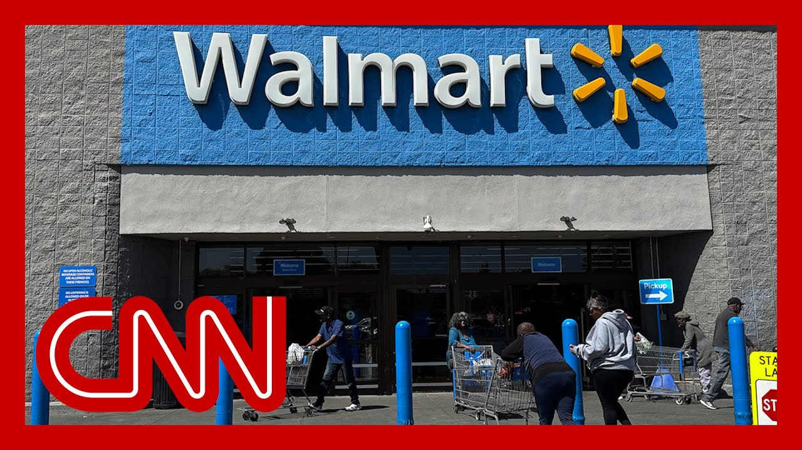

【沃尔玛警告称将因关税提高价格】
Summary: Walmart, the world's largest retailer, warns of price hikes due to Trump's tariffs, citing narrow retail margins and pressure from increased costs.
摘要： 全球最大零售商沃尔玛警告称，由于特朗普关税政策导致成本上升和零售利润微薄，将不得不提高价格。

⏱️ Estimated Reading Time: 8 min
Some of the breaking news coming in.
最新消息传来。
Walmart, the world's largest retailer, is issuing a new warning today, warning the company will have to raise prices due to President Trump's tariffs.
全球最大零售商沃尔玛今日发布新警告，称由于特朗普总统的关税政策，公司将不得不提高价格。
The company's CEO, Doug McMillon, is expected to tell analysts this on an earnings call today.
公司首席执行官董明伦预计将在今日财报电话会议上向分析师传达这一消息。
I'll read you a quote as they sent out excerpts ahead of time.
我将提前为您朗读他们发布的摘录内容。
We will do our best to keep our prices as low as possible.
我们将尽力保持价格尽可能低。
But given the magnitude of the tariffs, even at the reduced levels announced this week, we aren't able to absorb all the pressure.
但考虑到关税的规模，即使本周宣布的税率有所降低，我们也无法完全消化所有压力。
Given the reality of narrow retail margins, Walmart said the prices will begin to go up later this month.
鉴于零售利润微薄的现实，沃尔玛表示价格将在本月晚些时候开始上涨。
The hikes could put the company also in an uncomfortable position, if you will, with the Trump administration.
涨价可能使公司与特朗普政府的关系陷入尴尬境地。
Remember last month, the white House publicly shamed Jeff Bezos and also threatened Mattel's CEO with 100% tariffs after they said tariffs would lead to higher prices.
记得上个月，白宫公开羞辱了杰夫·贝索斯，并在美泰公司首席执行官表示关税将导致价格上涨后威胁对其征收100%关税。
Compare this news today with what Commerce Secretary Howard Rudnick told CNN's Dana Bash just on Sunday.
将今日新闻与商务部长霍华德·拉德尼克周日刚刚对CNN达纳·巴什所说的话进行比较。
So we do expect a 10% baseline tariff to be in place for the foreseeable future.
因此，我们确实预计在可预见的未来将实施10%的基准关税。
But don't buy the silly argument that the U.S. consumer pays.
但不要相信美国消费者会买单这种愚蠢的说法。
Joining me right now is Rick Newman, senior columnist with Yahoo Finance.
现在与我连线的是雅虎财经高级专栏作家里克·纽曼。
It's good to see you, Rick.
很高兴见到你，里克。
Okay.
好的。
So what do you make first and foremost of the statement from Walmart?
那么，你对沃尔玛的声明首先有何看法？
None of this is surprising.
这一切都不足为奇。
The cost of goods is going up because the these tariffs are a tax on something like $3 trillion worth of imports.
商品成本正在上升，因为这些关税是对约3万亿美元进口商品征税。
so what's going to happen is as the cost goes up to to the importers such as Walmart and most retailers, they are going to pass as much of that, as much of that cost on to end users as they can.
因此，随着沃尔玛等进口商和大多数零售商的成本上升，他们将尽可能多地将这些成本转嫁给终端用户。
This is not mysterious.
这并不神秘。
We know what the, level of the taxes is.
我们知道税率水平。
It's about 30% on most stuff coming in from China.
从中国进口的大多数商品约为30%。
It's 25% on imported automobiles and auto parts.
进口汽车和汽车零部件为25%。
It's 25% on steel and aluminum.
钢铁和铝为25%。
And for everything that's not covered by any of those, it's 10%.
对于不属于上述任何类别的商品，税率为10%。
So that more or less is going to be the magnitude of the price hikes on these, these products that are coming in from other countries.
因此，这些从其他国家进口的商品价格上涨幅度大致如此。
And we we know where these price hikes are going to show up as well.
我们也知道这些价格上涨将体现在哪些方面。
there's been a lot of analysis on this where we're going to see cars are going to get more expensive car parts are going to get more expensive, car insurance is going to get more expensive.
对此已有大量分析，我们将看到汽车、汽车零件和汽车保险都会变得更贵。
Leather goods such as handbags are going to get more expensive clothing, electronics, appliances.
手袋等皮革制品、服装、电子产品和家电也将变得更贵。
And we're going to hear more CEOs saying this because, if you run a publicly owned company, you have an obligation to your shareholders to tell them what's going on with costs.
我们将听到更多首席执行官这样说，因为如果你经营一家上市公司，你有义务向股东告知成本情况。
so what's probably going to happen is we're going to see, price hikes across the board from basically all retailers.
因此，可能发生的情况是，我们将看到几乎所有零售商全面涨价。
So if Trump wants to go after them, he's going to go after all of them en masse, instead of just picking off 1 or 2 the way he did earlier with Amazon.
因此，如果特朗普想针对他们，他将集体针对所有人，而不是像之前对亚马逊那样只挑一两家。
you know, and Congressman Andy Barr, who's a big supporter of Trump's trade policy, was on with John just last hour and was asked about this Walmart news and essentially his case was still to say short term pain, long term gain.
你知道，特朗普贸易政策的大力支持者安迪·巴尔议员刚刚一小时前与约翰连线，被问及沃尔玛这一消息，他的观点仍然是短期阵痛，长期收益。
Let me play this.
让我播放一下。
Walmart will lower prices in the long run.
沃尔玛长期来看会降低价格。
Lower prices will come down, it lower in the long run because we're going to get better deals.
长期来看价格会下降，因为我们将获得更好的交易。
This trade policy is creating massive opportunities.
这项贸易政策正在创造巨大机会。
And we're back in a bull market because of the developments that are happening in the trade negotiations.
由于贸易谈判的进展，我们重新回到了牛市。
What do you think of that?
你对此有何看法？
Right.
对。
That's economically illogical.
这在经济上是没有逻辑的。
so the trade deals that Trump is trying to get, the concessions she's trying to get are, to the extent he's getting any or they make any sense, to, to make it more favorable to get American products into foreign markets where there are barriers that make sense.
因此，特朗普试图达成的贸易协议和争取的让步，在某种程度上是有意义的，是为了让美国产品更容易进入存在合理壁垒的外国市场。
But that is not going to do anything to lower costs in the United States.
但这不会对美国国内的成本降低有任何作用。
And if Trump actually gets his wish, which is that we just start making all this stuff in the United States, it's going to get even more expensive than if it comes in from other countries with the tariffs, simply because labor costs are much higher here.
如果特朗普真的如愿以偿，即我们开始在美国制造所有这些商品，那么价格将比从其他国家进口加上关税还要高，仅仅因为这里的劳动力成本高得多。
manufacturing costs are much higher.
制造成本也高得多。
It just costs more to make stuff in the United States.
在美国制造商品成本就是更高。
So if you if you think that this manufacturing renaissance is a good idea, it is not going to come with higher with lower prices.
因此，如果你认为制造业复兴是个好主意，它不会带来更低的价格。
By definition, it's going to come with higher prices permanently.
根据定义，它将永久性地带来更高的价格。
So you have to accept that trade off.
因此，你必须接受这种权衡。
Well, we know that when it came to baby dolls and pencils and strollers that the president basically called it small ball.
我们知道，当涉及洋娃娃、铅笔和婴儿车时，总统基本上称之为小事。
But let's see if he what his reaction is to Walmart saying this, if he still thinks products coming out of the world's largest retailer feels like small ball.
但让我们看看他对沃尔玛这一表态的反应，看他是否仍然认为全球最大零售商的产品是小事。
it was good to see Eric.
很高兴见到埃里克。
Thanks for jumping on.
感谢你的参与。
I really appreciate it.
非常感谢。